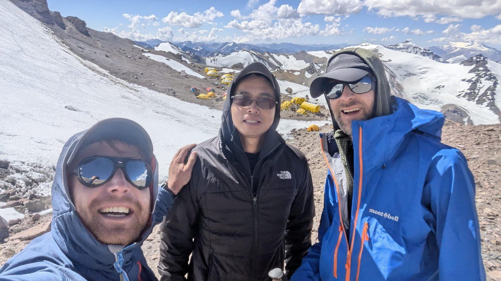
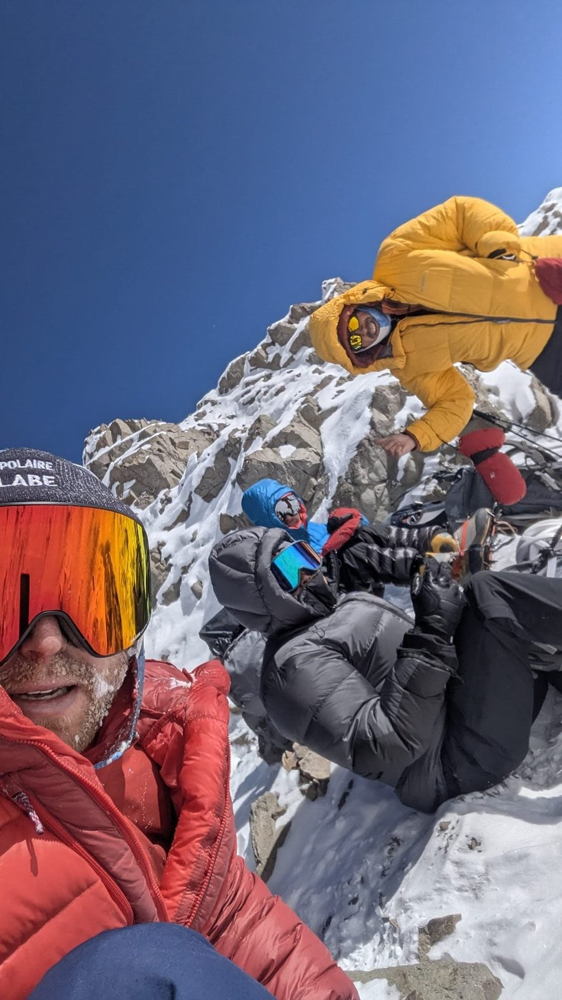

So here are the four mountains and the four lessons, in order.
Mont Blanc, September 2015: what does altitude actually feel like?
My first time above 4,000 m, and the Mer de Glace training day at the start of that week was the first time I had ever worn crampons in my life. Five days later I was on the summit.
What I learned there was purely descriptive, because I had no framework at all yet:
- You do not sleep. My first night above 3,800 m, at the Refuge du Goûter, was terrible and I had no idea that was normal.
- You cool down immediately. On the summit we lasted about fifteen minutes before the cold and the altitude pushed us back down. Nobody had told me the top is not a place you get to stay.
- The last section lies to you. False summit after false summit, all those smaller hills, and it felt like we would never arrive. That is partly terrain and partly what low oxygen does to your sense of progress.
I came off Mont Blanc knowing what altitude felt like and knowing nothing about how to manage it. That gap took another ten years to close... and it cost me a mountain.
Aconcagua, January 2025: the expensive lesson
Eighteen days on the mountain. I turned around at 6,500 m, about 460 metres below the 6,962-metre summit.

This is the most useful thing that has happened to me in the mountains, and it is the one entry on my timeline with no summit next to it. I am leaving it there on purpose.
What Aconcagua taught me was not "altitude is hard." I knew that. It taught me that altitude is a budget. You arrive with a finite amount of capacity and every single thing you do either spends it or protects it: how fast you walk on the easy days, how much you eat when you do not want to, how well you sleep, how much you argue with the pace.
I spent mine too early, on days that felt fine at the time. By the time the summit push came around, there was nothing left in the account. It is not a wall you hit. It is two weeks of small withdrawals you did not notice...

Kilimanjaro, January 2026: spending it properly
Exactly a year later, seven days on Kilimanjaro with eight friends, and I did everything differently.
- I went slower than felt necessary from day one. Not slower at the top, slower at the bottom, when it feels absurd.
- I ate when I did not want to. Appetite goes first and it goes early.
- I protected sleep like it was the objective, because functionally it is.
By the time we reached the last camp I was more acclimatised than I have ever been, and the summit push was, in a strange way, the enjoyable part, if you can say that about a midnight start at 4,600 m. Not because it was easy. Because for the first time I knew exactly what was coming and I had the reserves to meet it. The summit was awesome.
That is the whole difference between 2025 and 2026, and it is not fitness. My fitness barely changed. What changed was how I spent the first four days.
Matterhorn, August 2026: when altitude is not the problem
The Matterhorn tops out at 4,478 m, which after Kilimanjaro and Aconcagua is not a serious altitude problem. We were up in about 3 hours 20 from the Hörnli Hut, against a standard guided allowance of four to five hours. First party on the mountain that day!
And I nearly did not get up it, because of frozen fixed ropes. An overnight frost had iced them, I was climbing in two pairs of gloves, and every grab slid back down the rope. I got through that section on stubbornness rather than technique... and I will say so.
The lesson is the inverse of the other three. Once you can manage altitude, altitude stops being the thing that stops you. Something else does. In 2025 on the same ridge it was technical skill and a rope team that had never climbed together. In 2026 it was ice on a rope at dawn. Neither had anything to do with oxygen.
What does altitude sickness actually look like?
Two people I was with on Kilimanjaro did not summit, and both were the right call.
Yoshi developed high altitude pulmonary oedema, which is fluid building up in the lungs. It is the serious one. It stopped him at base camp and stopping was not really a decision, it was the only outcome that did not end badly. Descent is the treatment. There is no version of that where you push on.
Nancy came about halfway up the summit push, was feeling the altitude, and had left her heavy gloves behind so her hands were going. She turned around.
I am not a doctor and this is not medical advice, so read properly on acute mountain sickness, HAPE and HACE before you go high, and talk to someone qualified. But the practical version I carry is short: altitude sickness does not respond to willpower, and going down is the only reliable fix. Everyone I have watched make that call was right to.
Six rules I now follow
- Go slower than feels necessary on the early days. That is where the budget is won or lost, not on summit night.
- Eat on a schedule, not on appetite. By the time you want food at 5,000 m, you are already behind.
- Treat sleep as an objective. Earplugs, a warm enough bag, an early night, whatever it takes. Bad sleep compounds daily.
- Book the extra day. On Yotei we booked two days for a one-day mountain and that is why I have a summit. Same logic, bigger scale.
- Arrive with the technical skill the route needs. Altitude experience is not transferable to rock. I found that out the hard way at 3,800 m on the Hörnli.
- Decide your turnaround BEFORE you are tired. The version of you at 6,500 m should not be the one making that call from scratch.
Eleven years, four mountains, three summits and one turnaround. If you only take one thing from this: the turnaround taught me more than the three summits put together, and Kilimanjaro and the Matterhorn both happened because of it. That is why Aconcagua is still on my timeline with no summit next to it, and why it is staying there.